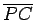
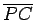

Schleppkurve oder Traktrix nennt man den geometrischen Ort aller Punkte mit der Eigenschaft, daß das Tangentenstück einer Kurve zwischen Berührungspunkt P und Schnittpunkt der Tangente mit einer Leitlinie, hier mit der x-Achse, die konstante Länge a besitzt.
In der Abbildung ist die Traktrix blau gezeichnet. Die Traktrix wird von einem Punkt P, Schleppunkt genannt, beschrieben, der an einem Ende eines nicht dehnbaren Fadens mit der Länge a befestigt ist, wenn das andere Ende M entlang der Leitlinie, hier entlang der x-Achse, bewegt wird.
Die Gleichung der Traktrix lautet
| (2.242) |
Die x-Achse ist Asymptote. Der Punkt A(0,a) ist eine Spitze. Die Kurve verläuft symmetrisch zur y-Achse.
Die Länge des Bogens  ist Bei wachsender Länge des Bogens L nähert sich die Differenz L-x dem Wert wobei x hier die Abszisse des Punktes M ist.
ist Bei wachsender Länge des Bogens L nähert sich die Differenz L-x dem Wert wobei x hier die Abszisse des Punktes M ist.
Der Krümmungsradius ist  Krümmungsradius  und Normalenabschnitt sind zueinander umgekehrt proportional:
Krümmungsradius  und Normalenabschnitt sind zueinander umgekehrt proportional:
Die Evolute der Traktrix, d.h., der geometrische Ort ihrer Krümmungskreismittelpunkte in der Abbildung rot dargestellt, ist die Katenoide mit der Gleichung (2.241).